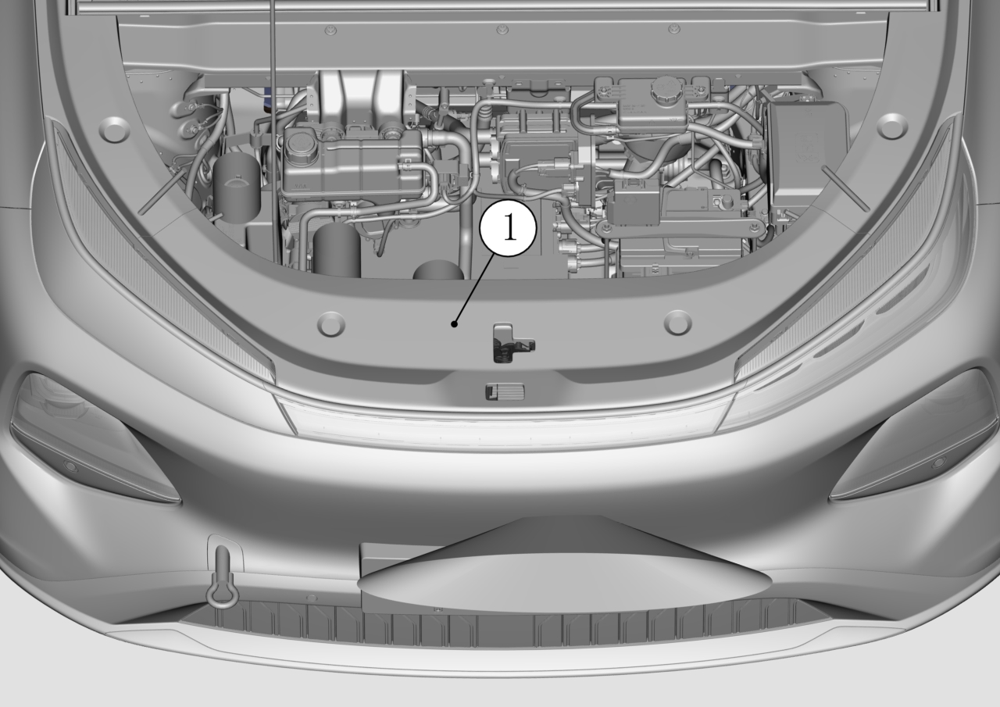
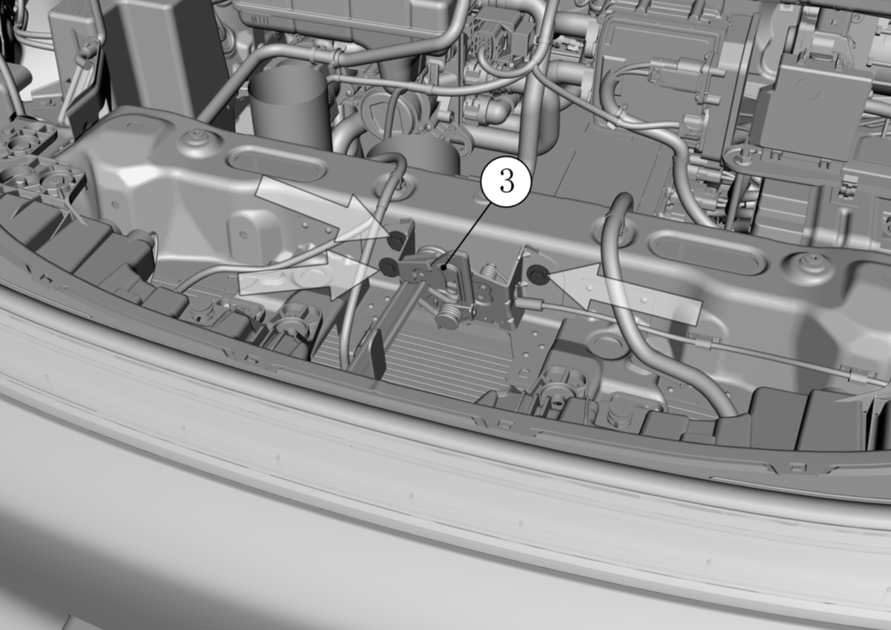
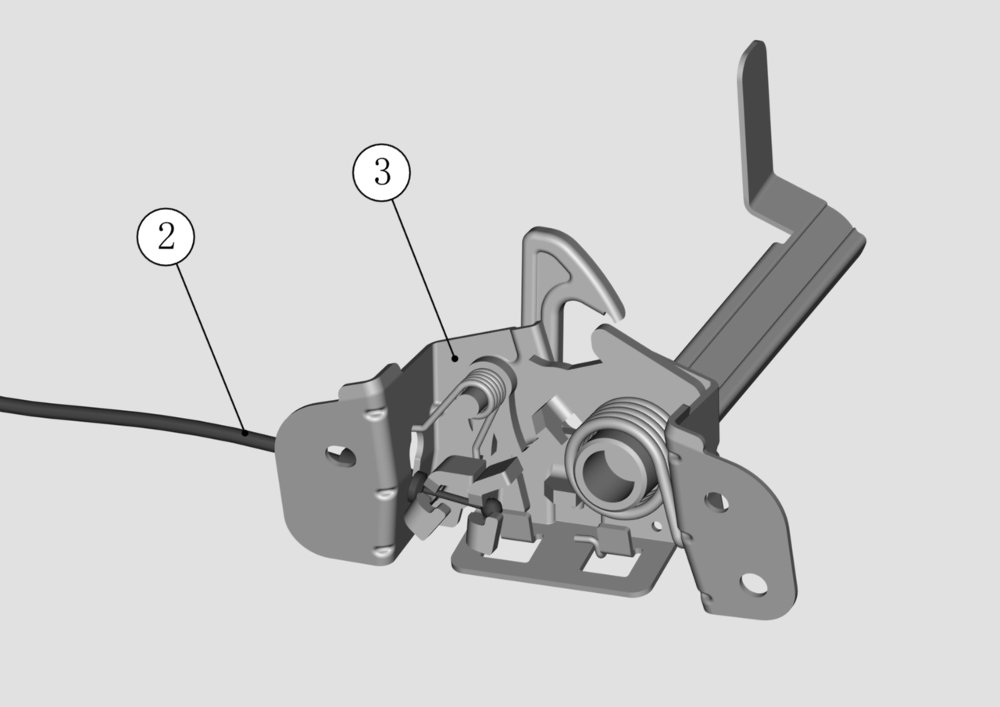

Снятие
Извлечь фиксатор верхней декоративной накладки,
Извлечь верхнюю декоративную накладку ①;

Выкрутить крепежные болты замка капота — стрелка,
Момент затяжки болтов: 23 ± 3 N.m,
Снять замок капота ③;

Отсоединить трос разблокировки капота ②,
Извлечь замок капота ③;

Установка
Установка в основном выполняется в обратном порядке.
Обязательно убедитесь, что наконечник троса разблокировки капота полностью защелкнут в соответствующий паз замка капота.
Обязательно убедитесь, что момент затяжки крепежных болтов замка капота достиг 23 ± 3 N.m.